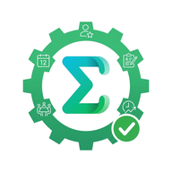

🔔
חסר תיעוד!
יש ימים ללא סיכום ביקור או נוכחות. נא להשלים כדי שלא יישכח:
📍 תעד עכשיו
אטפל בזה אחר כך
✏️ עריכת דיווח נוכחות
שנה תאריך או סוג יום ושמור. הדיווח המקורי יתעדכן ולא ייווצר דיווח נוסף.
📅 תאריך:
📅 סוג יום:
🏢 משרד
🏠 מהבית
🪖 מילואים
🌴 חופש
🚫 לא בעבודה
➕ אחר
➕ פירוט (אחר):
ביטול
💾 שמור שינויים
Σ
Sigmatec
Operations
📅 טוען...
📲 התקן אפליקציה
👤 ...
↗ EMS
📊 הפקת דוחות
📍 דוח ביקורי שטח
מ־
עד
📄 PDF
📗 Excel
📅 דוח נוכחות חודשית
עובד
חודש
📄 PDF
📗 Excel
🚚 דוח תעודות משלוח
מ־
עד
📄 PDF
📗 Excel
🧾 סיכום חודשי תעודות
חודש
📄 PDF
📗 Excel
⏱ שעות מול לקוחות
פתח · PDF / Excel מתוך העמוד
📦 מלאי לפי מיקום
📗 Excel
🏘 מלאי לפי קיבוץ
📗 Excel
הכל
0
🆕 חדשים
0
✅ פעילים
0
🤝 שיווקי
0
🏘️ לקוחות פוטנציאליים
🆕 לקוחות חדשים
0
▼
✅ לקוחות פעילים
0
▼
📅 נוכחות חודשית
→
←
📄 PDF
📗 Excel
🚚 תעודות / ייצוא
📋 משימה חדשה ב-EMS
📝 כותרת:
*
📄 תיאור (אופציונלי):
📂 סוג:
📦 אספקת מונים
🔧 תיקון תקלה
📌 אחר
⚡ עדיפות:
🔵 נמוכה
🟡 רגילה
🟠 גבוהה
🔴 דחופה
📊 סטטוס:
🆕 חדשה
🔄 בטיפול
⏳ ממתין ללקוח
⏸️ מוקפא
✅ בוצע
🚫 נדחה
➖ לא רלוונטי
❌ בוטל
🏢 אתר:
*
-- בחר אתר --
👤 אחראי (אופציונלי):
-- ללא --
📅 תאריך יעד (אופציונלי):
ביטול
💾 צור משימה
🗓️ יומן ביקורים
‹ הקודם
הבא ›
📍 מציג ביקורים בקיבוצים לפי יום. לחיצה על יום מציגה פירוט.
→
חזרה
⏱ שעות מול לקוחות
⏳ טוען...
🎤 הקלטה קולית
דבר חופשי: מה קרה בביקור ואילו פריטים וכמויות נדרשו.
00:00
🎤
לחץ כדי להתחיל להקליט
ביטול
🧠 מתמלל ומנתח את ההקלטה...
רגע, אל תסגור את החלון
0%
📝 תמלול (ניתן לערוך):
🎤 הקלט שוב
✅ החל לטופס
🔒
הזן קוד גישה
הזן את קוד הגישה כדי להמשיך
כניסה
← חזרה לבחירת שם
👋 מי אתה?
בחר את שמך, ולאחר מכן הזן קוד גישה.
עידן
עמיחי
אביאם
ניתאי
אבצן
מתניה
אליה
✅ נפתח וואטסאפ! לחץ שלח
📊 פעילות במערכת
פעולות שאינן קשורות לקטגוריות הקמת המערכת
תקופה:
היום
אתמול
7 ימים אחרונים
הכל
—
סגור
📋 העתק דוח
📋 דרישה חדשה
מי הקיבוץ ביקש את הציוד? נכניס את הדרישה למעקב
🏘 קיבוץ:
*
-- בחר --
👤 איש קשר בקיבוץ:
📅 תאריך:
📦 פריטים נדרשים:
+ הוסף פריט
📝 הערות:
סטטוס:
🆕 פתוחה
🔄 בטיפול
✅ סופקה
❌ בוטלה
ביטול
💾 שמור דרישה
🚚 תעודות משלוח וייצוא
בחר טווח תאריכים (ואופציונלית עובד), ואז הפק תעודה / דוח תעודות / ייצוא Excel.
דוח הנוכחות, כולל הביקורים, מופק בכפתור 📄 PDF בעמוד נוכחות.
👤 מבקר (אופציונלי):
-- כל הצוות --
אביאם
ניתאי
עידן
עמיחי
אבצן
מתניה
אליה
⚡ בחירה מהירה:
📅 חודש נוכחי
⏪ חודש שעבר
📍 7 ימים אחרונים
📍 30 ימים אחרונים
∞ הכל
📅 מתאריך:
📅 עד תאריך:
🚚 תעודת משלוח מביקור
📄 דוח תעודות משלוח
סגור
📗 Excel ביקורים
📋 לקוחות פוטנציאליים
✕
טוען...

Sigmatec Operations
התחברות עם חשבון ה-EMS שלך
📧 אימייל
🔒 סיסמה
🔑 התחבר
🔐 אימות דו-שלבי
נשלח קוד חד-פעמי לאימייל שלך. הזן אותו כאן:
✅ אמת קוד והתחבר
🔁 שלח קוד שוב
👁 כניסה לצפייה בלבד (הפקת דוחות)
צפייה והפקת דוחות בלבד, ללא עריכה. הזן קוד צפייה:
👁 כניסה לצפייה
מערכת התפעול של סיגמטק · כניסה מאובטחת